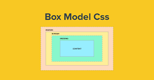

Es un contenedor en línea. Sirve para aplicar estilo al texto o agrupar elementos en línea. Sus etiquetas son: y (ambas obligatorias). Está definido como: Elemento especial, y por lo tanto en línea.
Esto es una frase, y esto un span dentro de una frase, con estilo de color rojo
Sirve para crear secciones o agrupar contenidos. ... Está definido como: Elemento en bloque.
aqui el div tiene un color verde con estilo de fuente italic
Timothy "Tim" John Berners-Lee es un científico de la computación británico, conocido por ser el padre de la Web. Estableció la primera comunicación entre un cliente y un servidor usando el protocolo HTTP en noviembre de 1989.
En octubre de 1994 fundó el Consorcio de la World Wide Web (W3C) con sede en el MIT, para supervisar y estandarizar el desarrollo de las tecnologías sobre las que se fundamenta la Web y que permiten el funcionamiento de Internet.
La propiedad overflow permite regular la visiblidad de los contenidos que sobresalen de una caja html. Permite regular si los contenidos que sobresalen se seguirán viendo, si se ocultarán o si aparecerá una barra de scroll en el documento
Se trata de Hasbullah Magomedov y es un adolescente de 18 años con acondroplasia. Este aparente niño de cinco años se ha convertido en todo un fenómeno viral gracias a los vídeos que protagoniza.
El modelo de cajas o "box model" es seguramente la característica más importante del lenguaje de hojas de estilos CSS, ya que condiciona el diseño de todas las páginas web. El modelo de cajas es el comportamiento de CSS que hace que todos los elementos de las páginas se representen mediante cajas rectangulares.
dentro de estas encontramos el padding, border y margin
La propiedad border es una forma rápida para establecer el ancho, estilo y el color del borde izquierdo de un elemento. La propiedad border solo puede establecer todos los cuatro bordes; puede aplicar solo un ancho y estilo de borde.
La propiedad CSS margin establece el margen para los cuatro lados. Es una abreviación para evitar tener que establecer cada lado por separado con las otras propiedades de margen: margin-top (en-US), margin-right , margin-bottom y margin-left (en-US). También se permiten valores negativos
La propiedad CSS padding establece el espacio de relleno requerido por todos los lados de un elemento. El área de padding es el espacio entre el contenido del elemento y su borde ( border ). No se permiten valores negativos.

esta imagen tiene los siguientes valores
border: 1px solid #000; , es decir un borde solido de un pixel de color negro
margin: 2px 1em 0 auto;, margen de dos pixeles y 1em y auto
padding: 10px 3% 20px; y aqui tiene un padding de 10px un 3%